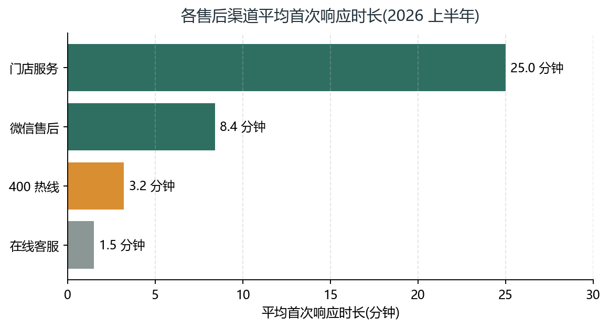

云杉智能提供热线、在线、微信与门店四种服务渠道。各渠道平均首次响应时长见下图，其中在线客服响应最快（1.5 分钟），适合处理软件类与参数类问题；门店服务适合需要当面检测的硬件故障。
| 渠道 | 服务时间 | 说明 |
|---|---|---|
| 400-800-12345 热线 | 8:00-20:00（含节假日） | 语音菜单可自助查询保修状态 |
| 在线客服（App / 官网） | 9:00-21:00 | 支持截图、小视频故障诊断 |
| 微信售后公众号 | 24 小时收单，工作时间响应 | 可预约上门与寄修服务 |
| 云杉授权门店 | 以门店公示时间为准 | 提供检测、配件更换与退换货 |

自产品签收之日起计算保修期，不同类别保修年限见下表。保修期内因产品自身质量问题导致的故障，云杉提供免费维修或更换；人为损坏、自行拆修、超期使用的部件不适用保修。
| 类别 | 保修期 | 说明 |
|---|---|---|
| 主机（含控制面板、注水臂） | 24 个月 | 整机故障免费维修 |
| 加热底座 | 36 个月 | 独立部件保修 |
| 玻璃壶 / 陶瓷滤杯 | 6 个月 | 非人为破损 |
| 电源适配器 / 线缆 | 12 个月 | 随主机保修政策执行 |
| 滤纸 / 水质滤芯等耗材 | 不在保修范围 | 按 App 内更换提醒购买 |
保修凭证：提供购买发票，或登录「云杉生活」App 出示电子保修卡（签收后自动激活）。
自签收之日起 7 日内，产品未拆封使用（或已使用但无污损）且配件齐全，可申请无理由退货。退货运费由用户承担；已产生的除垢剂、滤纸等耗材费用不予退还。
自签收之日起 15 日内，经检测确属产品本身质量问题的，可免费换新或退货。更换后产品保修期自原签收日重新计算。
云杉会员可在保修期内以折扣价购买延长保修服务，最长可延保 24 个月。以旧换新活动期间，任意品牌功能正常的手冲咖啡机均可参与抵扣，具体补贴金额以 App 活动页公示为准。
| 项目 | 内容 |
|---|---|
| 售后热线 | 400-800-12345（演示样例号码） |
| 在线客服 | 「云杉生活」App / 官网在线咨询 |
| 服务邮箱 | service@spruce-demo.example |
| 服务时间 | 热线 8:00-20:00，在线 9:00-21:00，全年无休 |
| 公司地址 | 云杉省云杉市云杉区云杉路 1 号（虚构地址） |